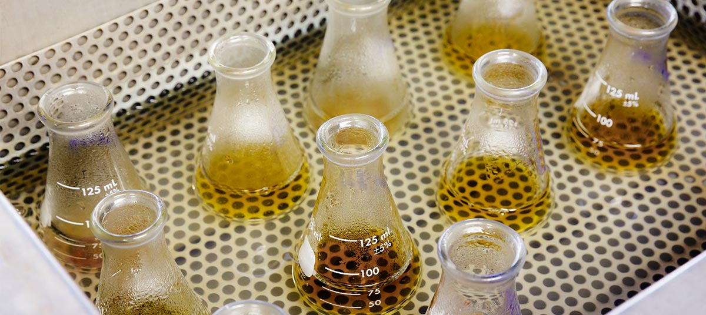
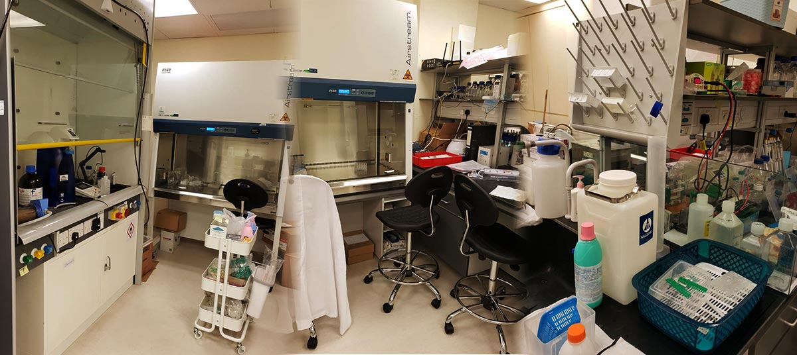
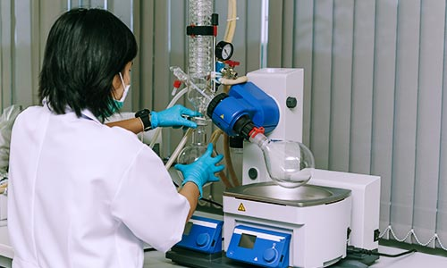

At CSF we believe that research and development across different spectrums of the pharmaceutical process can be streamlined and catalyzed using technology. By employing computational processes and modules, our methods can help pharmaceutical companies and/or drug researchers drive drug discovery and modelling, and in combination with suitable in vitro and in vivo studies can increase efficiency towards the validation of potential drug candidates.
CSF國際控股專門使用技術去簡化和促進跨製藥工藝各個領域的研究與開發。通過採用計算過程和模塊，我們幫助製藥公司和藥物研究人員去推動藥物研發和建模，並與適當的體外和體內研究結合，提高驗證候選藥物的效率。
CSF, together with the capabilities of its wholly owned subsidiary, T&G Technology Research Company Limited, is a technology development and data analytics company with a focus in, but not limited to, use cases in the health care industry.
CSF連同其全資子公司T＆G Technology Research Company Limited的能力，是一家技術開發和數據分析公司，專注於但不限於醫療保健行業的用例。
OUR FACILITY:
我們的設施:
Our facility operated by our wholly owned subsidiary - T&G Technology Research Company Limited:
我們的設施由我們的全資子公司 - T＆G Technology Research Company Limited經營：

OUR TEAM:
我們的團隊:
The team encompasses technology developers and practitioners of software and data analytics. Developers and analysts are experienced in applying systematic solutions with use cases customized towards the medical research and services industry, with expertise and research capability accumulated through both commercial enterprises and academic institutions.
我們的團隊包括技術開發人員以及軟件和數據分析專員。開發人員和分析人員擁有豐富以應用系統解決方案的經驗。他們針對醫學研究和服務行業定制用例，並具有在企業和學術機構積累的專業知識和研究能力。

THE OPPORTUNITY:
機遇:
Traditionally, drug discovery and development is a time-consuming, costly and high-risk business. On average, the cost of launching a new drug is estimated to approach billions of U.S. Dollars and can take over a decade to make it to the market. Despite the huge expenditures, only approximately 1 in 1,000 potential drugs is graduated to human clinical trials after pre-clinical testing in the United States, and over 85% of drug candidates entering phase 1 trials fail to achieve drug approval. Even after a drug is commercialized, there are just too many factors affecting the sales of pharmaceutical products. Ultimately, on average, according to some estimates only 20% of approved new drugs generate revenues that exceed the average R&D investment.
傳統上，藥物發現和開發是一項耗時，昂貴且高風險的業務。平均而言，發布新藥的成本估計接近數十億美元，並且可能需要十多年才能推向市場。在美國，每千種潛在藥物中，大約只有一種是通過人類臨床試驗的，進入第一階段試驗的候選藥物中有超過85％未能獲得藥品核准。即使在藥物商品化之後，也有太多因素會影響藥物產品的銷售。最終根據評估，平均而言，只有20％的批准新藥能夠產生超過平均研發成本的收入
The required time, high costs, and failure rate of drug development drive pharmaceutical companies to seek alternatives for searching effective therapeutics with promising market demand and potential revenue. One strategy utilized by drug companies to quicken the development time to yield a market product is drug repurposing; That is to identify new indications for approved or investigational drugs that are outside the scope of the original medical uses. It is often viewed as a lower-cost method for drug commercialization as it is based on already-approved drugs (which has been proven to be safe for human use) and explores new target indications.
藥物開發所需的時間，高成本和失敗率驅使製藥公司尋找替代方法，以尋找具有可觀的市場需求和潛在收入的有效療法。製藥公司會重新制定藥品用途，用來加速開發生產產品。這樣可以識別已批准或研究藥物的原有醫學用途的範圍外的新用途。由於這個方法是基於已經批准的藥物（已被證明人類能安全使用），去探索新的對應效用，因此被視為一種低成本的藥物商業化方法。
Some key benefits of drug repurposing over traditional drug discovery include:
與傳統藥物發現相比，重新制定藥物用途的一些主要好處包括：
-
Well-established safety profiles for existing drugs;
為現有藥物建立完善的安全檔案;
-
Time-saving;
節省時間;
-
Cost-saving;
節約成本;
-
Lower failure rates;
更低的失敗率;
-
Potential to out-license clinical candidates.
可能會給對外授權的臨床候選者。
OUR SOLUTIONS:
我們的解決方案:
-
A systematic way to identify and reinvestigate drugs;
一套完善識別和重新研究藥品的系統方法;
-
Standardized method in checking existing chemical drug molecules against therapeutic targets;
針對治療目標檢閱現有化學藥物分子的標準化方法;
-
Multiple modules and processes that simulate the effectiveness of drug molecules against rare diseases for outcome prediction and selection.
多個可模擬藥物分子對罕見疾病的有效性的模塊和過程，以進行結果預測和選擇;
-
Virtual screening mechanism that simulates the interactions between a given chemical structure and therapeutic targets.
虛擬篩選機制，可模擬給定化學結構與治療靶標之間的相互作用;